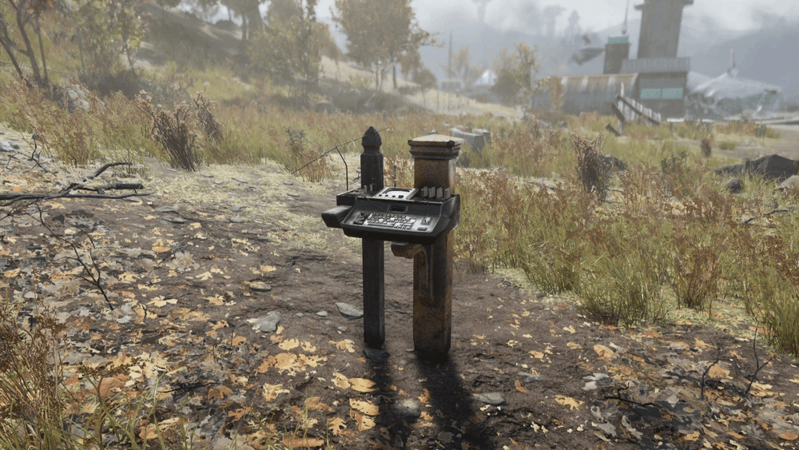
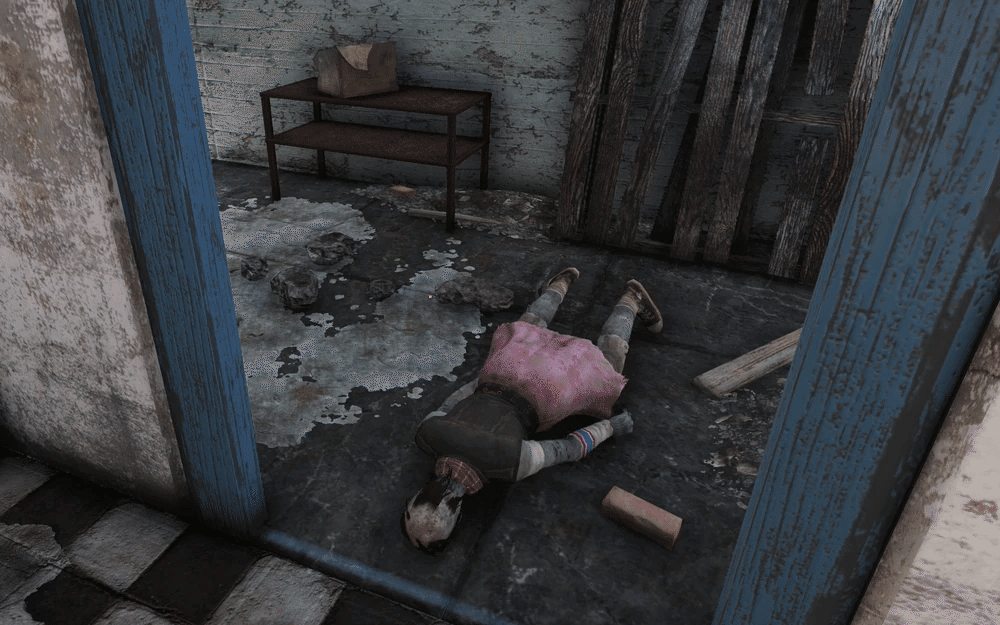
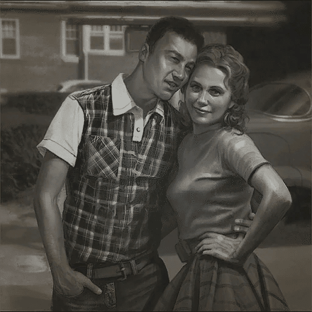

デスクローアイランド
デスクローアイランドはアパラチアの森林地帯にある場所です。
この島はデスクローの住処として選ばれました。
デスクローは地面の下に巣を作り、不注意な旅人や探検家を待ち伏せするためにのみ飛び出します。
レイアウト
デスクローは島の中心部の近くに巣を作っています。
近づくと立ち上がり、島を歩き回り始めます。
東岸の北端近くには、血まみれの骸骨が3体いるピクニックサイトがあります。
川を見渡せるように、ライトが付いた屋根付きのベンチがあります。
西岸には、追加のスケルトン、ダッフルバッグ2個、工業用トランクが置かれた打ち上げられたボートの近くに、レベル3の施錠された金庫があります。
ここには地質センサーがあり、デイリークエスト「Ecological Balance(*)」に必要なホロテープのうち1つが入手できる可能性があります。
追記
Ecological Balance
Fallout 76の デイリークエストです。
エイミー・ケリー(*)という女性が、スコーチによる環境変化を監視していました。
彼女の任務を継続するために、プレイヤーは環境センサーからホロテープを回収し、データを分析プログラムが組み込まれた彼女の端末にアップロードすることができます。
このクエストを一度完了すると、デイリークエストになります。
クエストを初めて開始するには、ホロテープ「タイガート水処理場のジェフ宛メッセージ」を探して聞いてください。
エイミーのトレーラー内、北側、彼女のターミナルのすぐ左の地面にあります。
エイミーの現在の居場所を知るには、彼女のターミナルの「メッセージ」から「今夜はデート？」にアクセスしてください。
処理場周辺にはリベレーターたちが潜んでいるので注意してください。
カウスポット乳製品製造所へ進み、床に横たわるエイミーの死体を見つけて、彼女の端末のパスワードが書かれたメモを回収する。
その間、クリーマリー周辺に潜むフェラル・グールを倒す。
水処理場にあるエイミーのトレーラーに戻り、彼女の端末で環境監視プログラムにアクセスする。
初回アクセス時に50 XPを獲得する。

次のパートでは、森林地帯の放射状エリアにあるセンサーステーションから3つのホロテープを回収します。
ホロテープには、水データ、土壌データ、大気データが含まれています。
3つすべて入手したら、水処理施設にあるエイミーのターミナルに戻り、各ホロテープをアップロードし、ターミナルで「データ処理開始」を選択してください。
クエスト進行中にプレイヤーが現在接続しているサーバーを離れて別のサーバーに切り替えると、ホロテープの位置情報が変更される可能性があるので注意してください。
これでクエストは完了し、初めてクリアした場合は450 XP、複数回クリアした場合は400 XPを獲得します。
さらに、60キャップ、レジェンダリー証書3個、廃殺菌剤3個、そしてランダムアイテムが報酬として与えられます。
レジェンダリー武器または防具が手に入る確率は低いです。
デイリークエストを次回完了するには、3 つのホロテープを取り、エイミーの端末で再度アップロードするだけでよいことに注意してください。
エイミー・L・ケリー

エイミー・L・ケリーはアパラチアのレスポンダーの元仲間で、カウスポット乳製品製造所で遺体で発見された。
エイミー・L・ケリーはVault-Tec大学の学生で、後にアマチュア科学者に転身しました。
彼女はジェフ・ナカムラの恋人であり、レスポンダーの知人でもありました。
2082年のクリスマス・フラッド発生後しばらくして、ジェフはエイミーと出会い、プロポーズを試みました。
しかし、アパラチアの復興に専念することの方が重要だと考えたエイミーは、ジェフがプロポーズする機会さえ与えられずに、悲しげに断りました。
2095年、エイミーはタイガート水処理場周辺に滞在し始め、トレーラーハウスに宿泊し、専用の端末で生活を記録していた。
ジェフは時折彼女を訪ね、端末にメッセージを送信していた。
レスポンダーに加わるようグループから絶えず圧力をかけられていたにもかかわらず、エイミーは彼らから離れることを選び、彼らの協力を得て、スコーチによる環境汚染を監視するプログラムの開発プロジェクトに取り組み続けた。
頻繁に参加を求められたことで、ジェフとマリア・チャベスとの間に軋轢が生じていた。
ある日、エイミーはモールラットに噛まれて重病にかかりました。
もうだめだと思っていましたが、偶然ジェフが見舞いに来てくれました。
エイミーはジェフの思いやりと気高さ、そして自分の人生にとってどれほど大切な存在だったかを改めて実感しました。
しかし、レスポンダー本部の口の軽さから、この計画はブラザーフッド・オブ・スティールに知れ渡り、レスポンダーから銃を突きつけて情報と計画資産を奪おうとする事態に発展した。
マリアに諭された後も、ブラザーフッドはエイミーと彼女の研究を追っていた。
エイミーはブラザーフッドが自分を狙っていることを知り、彼らが自分の目的、ひいては武器製造のために彼女の技術を狙っているのではないかと推測した。
エイミーはブラザーフッドが自分を見つけようとしている兆候に気づき、トレーラーを放棄して身を隠した。
ブラザーフッドがジェフと仲間のレスポンダーたちに与えた仕打ちを鑑み、エイミーはブラザーフッドに何も渡すことを拒否したのだ。
彼女はジェフにホロテープを残し、二人が初めてデートした場所、カウ・スポッツ・クリーマリーで会えると告げた。
しかし、エイミーは端末にジェフからのメッセージがあり、その日付の場所も記載されていたことを見落としていたようだ。彼女の遺体はカウスポット乳製品製造所で発見され、ジェフに彼女の研究結果をレスポンダーに共有するよう懇願する メモが添えられていた。
エイミーは、最後の日記の 1 つでジェフが自分のボーイフレンドであると述べているが、最後のメッセージを見ると、ジェフに愛していると告げたことはほとんどなかったようで、それが彼女の後悔の 1 つとなっている。
ジェフがエイミーと出会ったのは大戦前か後かは不明です。
クリスマスの洪水の後、彼女に出会ったか再会した時に、前向きな気持ちを取り戻したとジェフは述べています。
しかし、写真には戦前の二人が写っており、家と車の前できれいな服を着ており、車は損傷していないように見えます。

デスクローやデスクローの卵のデイリーになると賑わう島ですね。
雑誌とボブルヘッドが一つずつ湧くので巡回の時もお世話になってます。
This article uses material from the Fallout wiki at Fandom and is licensed under the Creative Commons Attribution-Share Alike License.
コミュニティ維持のため、寄付を受け付けております。
> COMMENTS